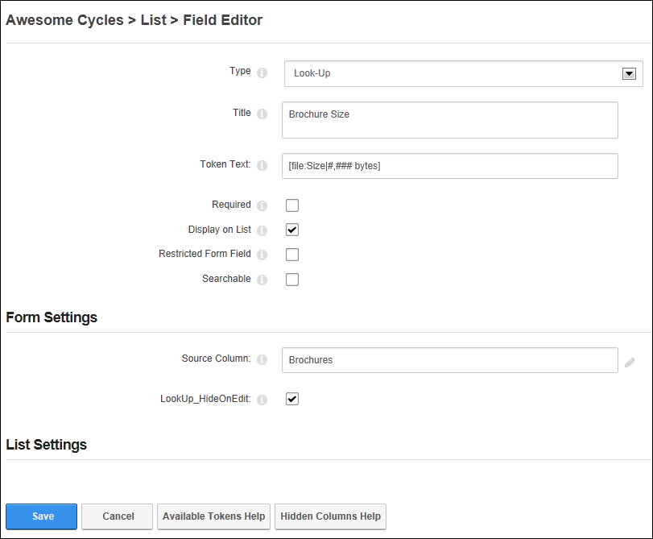
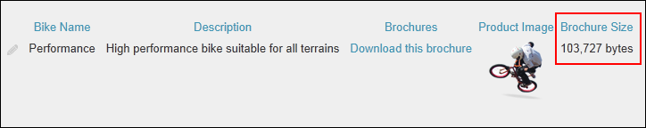

Adding a Look-Up Field
How to add a look-up field to a form or list using the Form and List module. This column type displays the result of an SQL query against an existing user or file column and displays the result in the form or list. For Example, the below tutorial queries the size of files displayed in the Brochures column and displays the result in the Brochure Size column. This tutorial assumes you are currently adding an look-up column to a form or list (See "Creating a Form or List") or editing an existing look-up record. See "Editing List or Form Columns"
- In the Title text box, enter a title that will be displayed on the form or list for this field.
- In the Token Text text box, enter the token text to query the User or File object.
- At Required, if this field must be completed to submit the form or add a record to a list - OR - if this field as optional. This is the default setting.
- At Display on List, if this column is visible on the list in the normal grid view. This is the default setting. - OR - to set the field as visible to Administrators only.
- At Restricted Form Field, if this column is only visible to users/roles who have been added to the "Edit Also Restricted Columns" permission (See "Setting Form Permissions") - OR - if the column is visible to all users. This is the default setting.
- At Searchable, if this column searchable using the Search Options configured for this module. This setting has no influence whether the field gets indexed for the side wide search - OR - if the column is not included in the module search. This is the default setting.
- Go to the Form Settings section.
- At Source Column, enter the name of the column containing a ref to a user or local file.
- At LookUp_HideOnEdit?, if this value will be displayed to all users when editing - OR - to hide the field on the Edit Form.
- Click the Save button to save the field and return to the Form & List Configuration page.
Tip: In the below example, the Look-Up column is set to display the size of the file selected in the Brochure column.

Adding/editing a Look-up field

The Look-Up column displayed in a List displays the size of the files displayed in the Brochures column